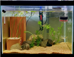

Hot
각시붕어 한살이 꾸러미
각시붕어 한살이 꾸러미에는 각시붕어의 한살이를 관찰할 수 있다. 꾸러미 속에는 각시붕어, 말조개, 벼, 노랑어리연, 부레옥잠, 새뱅이, 검정말이 있다.
각시붕어 한살이 꾸러미에는 각시붕어의 한살이를 관찰할 수 있다. 꾸러미 속에는 각시붕어, 말조개, 벼, 노랑어리연, 부레옥잠, 새뱅이, 검정말이 있다.
새뱅이 채집하기 새뱅이 한살이 꾸러미에서는 새뱅이의 한살이를 관찰할 수 있다. 새뱅이는 토종 민물 새우인데 논 옆이나 얕은 물에서 살고 크기는 약 3cm정도이다.
송사리 한살이 꾸러미는 송사리의 한살이 전용 꾸러미이다. 생존력과 번식력이 강한 송사리는 5~10월 사이에 알을 낳고 한살이를 관찰할 수 있다.
큰 먹이사슬 꾸러미는 색이 수조 속 물의 색이 초록색으로 보이는데 이는 물 속에 식물성 플랑크톤인 클로렐라가 있기 때문이다. 클로렐라 < 물벼룩 < 송사리 간의 먹이사슬을 확인할 수 있다.
작은 먹이사슬 꾸러미는 송사리, 물벼룩, 클로렐라 사이의 먹이사슬 뿐만이 아니라 생태계의 평형도 학습할 수 있다. 색의 변화를 통해 클로렐라의 양과 물벼룩, 송사리의 개체 수 간의 관계를 유추할 수 있다.
먹이그물 꾸러미에는 붕어, 쌀미꾸리, 새뱅이, 우렁이, 재첩, 부레옥잠, 붕어마름, 개운죽의 총 8가지 생물이 있다. 붕어와 붕어마름, 붕어와 작은 새뱅이 사이의 먹이그물 관계를 파악할 수 있다.